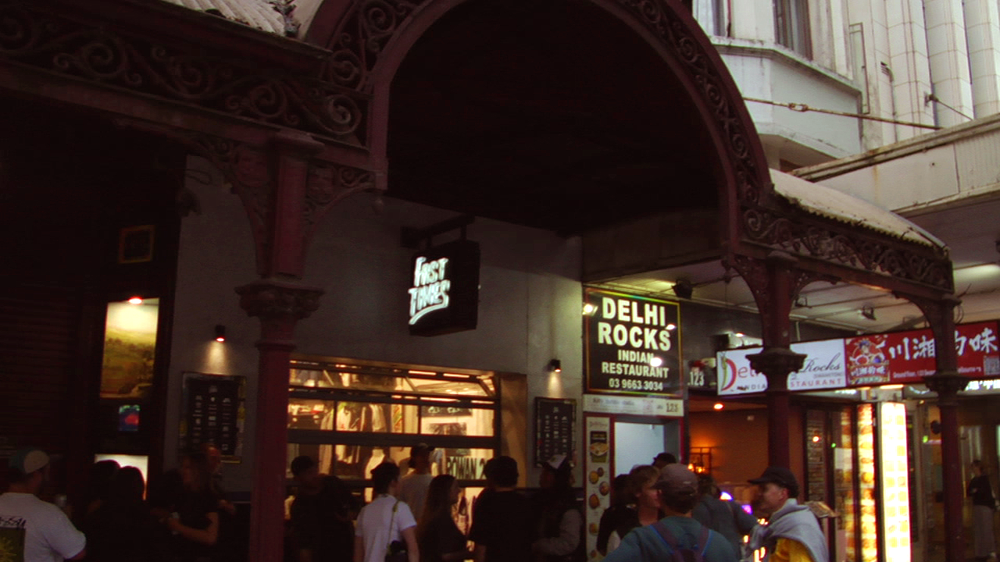
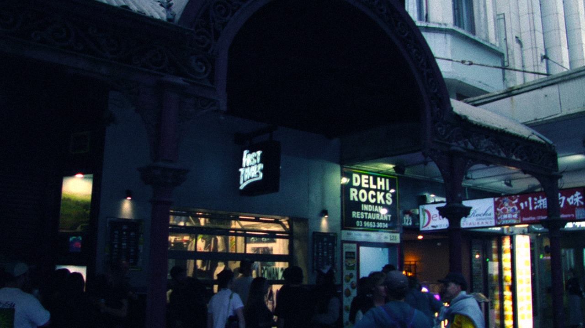
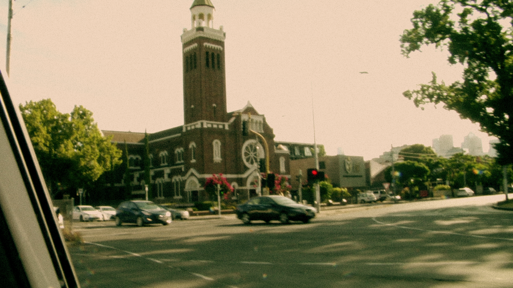

Intention
My first production experiment will be to improve upon my post-production visual effects to achieve a stylised look to produce a similar effect to that found in popular films such as “Aftersun” or “Blade Runner” in a zine format. This will be done by experimenting with color grading, contrast, saturation, grain, and color level effects to replicate the unique aesthetic qualities of these films in a print form. The goal of this experiment is to learn and apply these effects on my photographs to enhance the visual appeal and explore potential styles for my final media product.
This experiment will begin by capturing a range of shots in different settings and lightings, then by utilising the tools within popular photo editing software, Photoshop, I will experiment with the levels adjustment to manipulate shadows, highlights and mid-tones. Following these adjustments I will use colour levels and saturation adjustments to emphasise particular tones and colours in my shots, finally I will experiment with the use of grain to replicate the vintage look of popular media products to add character to my photographs. Throughout these experiments I will try to replicate the look of various media pieces to explore the ways they construct their stylised effects and how I can apply their techniques to my own media products
Experiment
Raw Photos

Edited Photos
 
Reflection
After experimentation in Photoshop with the outlined tools and techniques I have two edited photos using color grading, contrast, saturation, grain, and color level effects to achieve a similar style to my chosen reference pieces, “Aftersun” and “Blade Runner”. Throughout my experiment I found success referencing other media pieces that use practical techniques and vintage equipment to achieve their distinct aesthetic / style. I found the most success during my experimentation with Photoshops tool “colour levels”, this tool provided a way to balance colours on a set of CYMK sliders and I utilised its effect to give a distinct tone to my final photos. Applying noise / grain to my photographs provided a vintage / home made aesthetic to the product, however in my final product I may opt to use a camera that shoots 35mm film to achieve this effect in a more authentic way as I prefer this style of photo but feel the digital recreation looks too uniform.